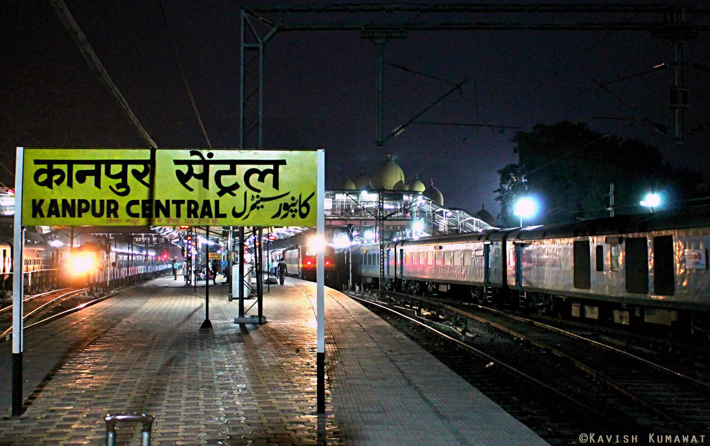

| Kanpur(formerly Cawnpore) is a large city in the state of Uttar
Pradesh, India. The city is famous for its leather and textile industries. It is the 12th most populous city in India and 11th most populous urban agglomeration. It is also the
second largest city proper and the largest urban agglomeration in Uttar Pradesh. Kanpur was an important British garrison
town until 1947 when India gained independence. Kanpur is the administrative headquarters of Kanpur Nagar district and
Kanpur division.
Indian Institute of Technology : Indian Institute of Technology Kanpur (also known as IIT Kanpur or IITK) is a public technical and research university located in Kanpur, Uttar Pradesh. It was declared to be an Institute of National Importance by the Government of India under the Institutes of Technology view more... JK Temple : JK Temple (Juggilal Kamlapat temple) is a temple in the Indian city of Kanpur.It is considered to be a unique blend of ancient and modern architecture. The mandapa of the temple has been constructed with high roof for adequate ventilation of light and air. The temple was constructed by JK Trust and major maintenance expenses of the temple also comes from the trust fund. The temple is also popularly known as Radhakrishna Temple .view more... Blue World : Blue World Theme Park is Kanpur’s first mega themed entertainment destination promising visitors from around the world the excitement of epic adventure zones in one location. 25 acres of land featuring over 25 rides and 10 gigantic slides including Dry Rides, aquatic wonderland, 7D Theater, Sky dive and India’s biggest private musical fountain and laser show.view more... |
 |